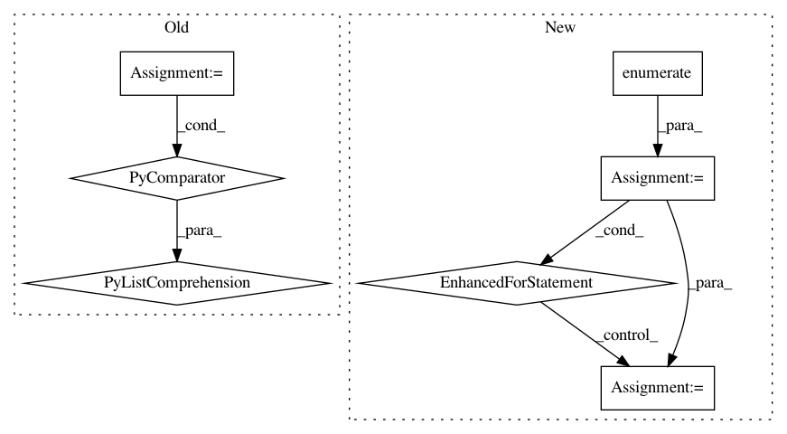

f19ace982075ea009af81f5e9f687cc2276f50ea,scripts/bert/fp16_utils.py,,grad_global_norm,#Any#Any#,24
Before Change
ctx = arr.context
groups[ctx].append(arr)
return groups
norm_groups = group_by_ctx(norm_arrays)
// reduce
ctx, dtype = arrays[0].context, "float32"
norms = [nd.add_n(*g).as_in_context(ctx) for g in norm_groups.values()]
total_norm = nd.add_n(*norms).sqrt()
scale = total_norm / max_norm
// is_finite = 0 if NaN or Inf, 1 otherwise.
is_finite = nd.contrib.isfinite(scale)
After Change
batch_size : int
Batch size of data processed. Gradient will be normalized by `1/batch_size`.
Set this to 1 if you normalized loss manually with `loss = mean(loss)`.
max_norm : NDArray, optional, default is None
max value for global 2-norm of gradients.
self.fp32_trainer.allreduce_grads()
step_size = batch_size * self._scaler.loss_scale
if max_norm:
_, ratio, is_finite = nlp.utils.grad_global_norm(self.fp32_trainer._params,
max_norm * self._scaler.loss_scale)
step_size = ratio * step_size
In pattern: SUPERPATTERN
Frequency: 3
Non-data size: 7
Instances
Project Name: dmlc/gluon-nlp
Commit Name: f19ace982075ea009af81f5e9f687cc2276f50ea
Time: 2020-01-20
Author: 50716238+MoisesHer@users.noreply.github.com
File Name: scripts/bert/fp16_utils.py
Class Name:
Method Name: grad_global_norm
Project Name: dmlc/gluon-cv
Commit Name: 0fd13ccd7e61c9186127993080240c07b7ad905e
Time: 2019-10-28
Author: yizhu59@gmail.com
File Name: docs/tutorials/action_recognition/dive_deep_ucf101.py
Class Name:
Method Name:
Project Name: NTMC-Community/MatchZoo
Commit Name: cea292769af4ac688649573a11b20f4d69024e3d
Time: 2019-05-15
Author: 469413628@qq.com
File Name: tests/unit_test/processor_units/test_processor_units.py
Class Name:
Method Name: test_bert_tokenizer_unit